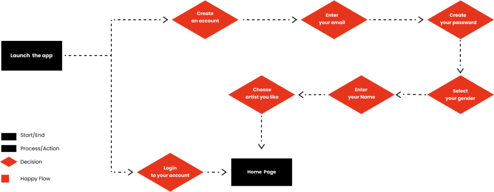
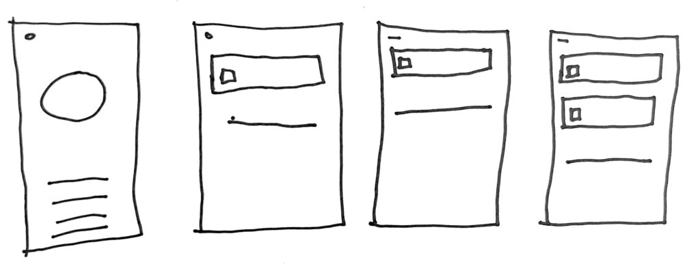
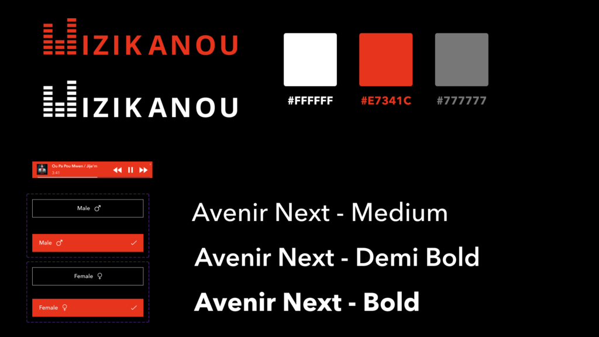

Haitian listeners needed a more focused way to discover music, cultural stories, and trusted artist content.
Case study
MIZIKANOU
A dedicated Haitian music streaming app designed to reconnect the Haitian diaspora with cultural roots through curated content, high-quality audio, community features, and a culturally attuned user experience.
I conducted interviews, studied streaming competitors, mapped flows, sketched layouts, and built the visual direction.
The app prioritizes curated Haitian content, playlists, offline listening, community features, and account trust.
The final prototype shows how discovery, playback, sharing, and cultural content can work as one product experience.

My contribution
- Conducted user interviews to understand Haitian music listening habits, trust factors, and expectations for a dedicated streaming app.
- Ran competitive research across major streaming platforms to identify baseline features and differentiation opportunities.
- Developed the user flow, lo-fi sketches, mid-fi wireframes, style tile, brand direction, and high-fidelity prototype.
Challenge
Haitian music streaming has been declining on major platforms as other genres gain popularity, creating distance between the Haitian diaspora and their cultural roots.
The client wanted a dedicated streaming app focused solely on Haitian music, with an experience that could feel trustworthy, culturally connected, and competitive with established platforms.
Research & expectations
- Conducted one-on-one interviews about ideal app features, streaming habits, Haitian music engagement, and trust factors.
- Users expected curated Haitian music, personalized playlists, offline listening, straightforward search, and high-quality audio.
- Users valued exclusive features such as artist interviews, behind-the-scenes content, cultural stories, and community engagement.
- Competitive research compared major music streaming platforms to identify standard features and differentiation opportunities.
Process evidence



Design decisions
The user flow supports account creation, an introduction tour, search, recommendations, and Haitian music categories.
Core flows include playback, playlist creation, saved favorites, and high-quality listening controls.
The concept includes sharing, community features, secure account management, notifications, feedback, and support.
Selected final direction
Outcome
The final high-fidelity prototype brings together branding, style tile decisions, refined visual design, and interactive screens for a culturally focused streaming experience.
The app concept is designed to deliver Haitian music in a way that strengthens cultural connection while meeting modern expectations for usability, security, and personalization.
- Defined a culturally specific product strategy instead of copying generic music-streaming patterns.
- Connected user expectations to concrete features: curated content, offline listening, social sharing, playlists, and support.
- Created a polished prototype that shows how discovery, playback, account management, and community features work together.